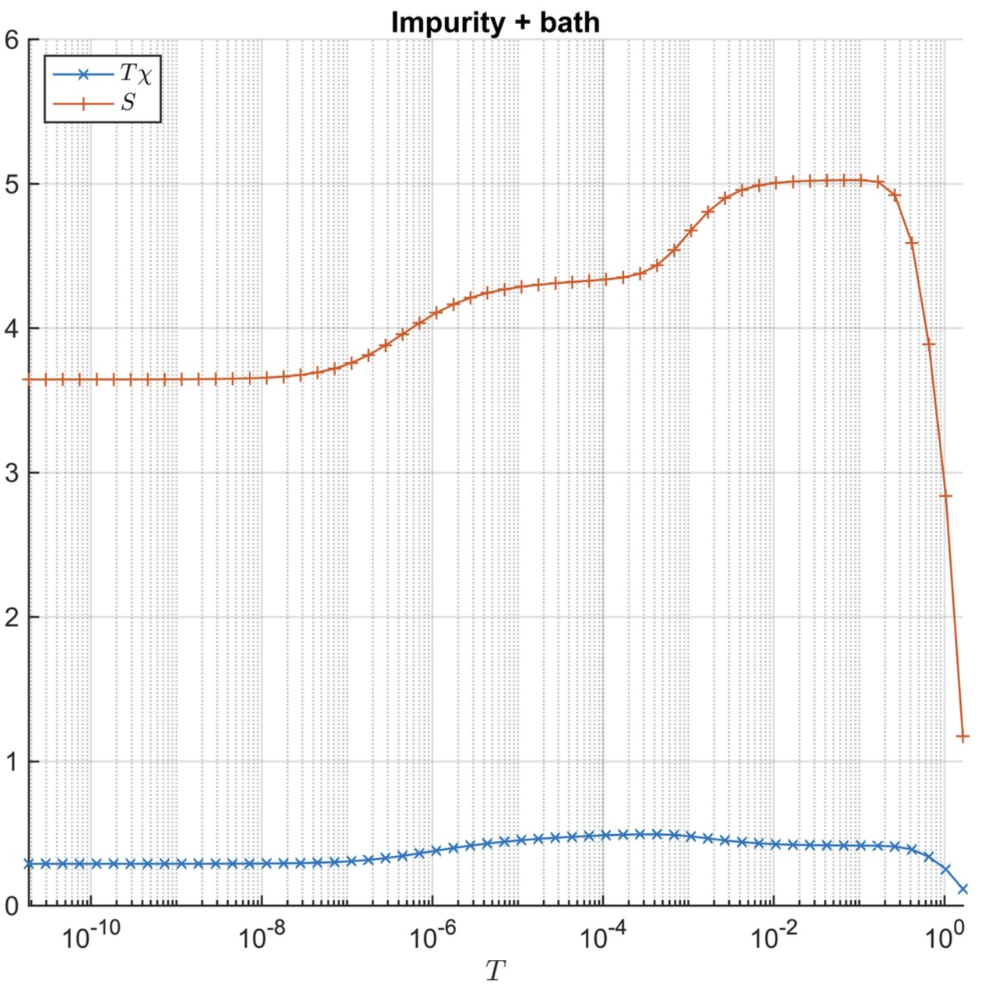
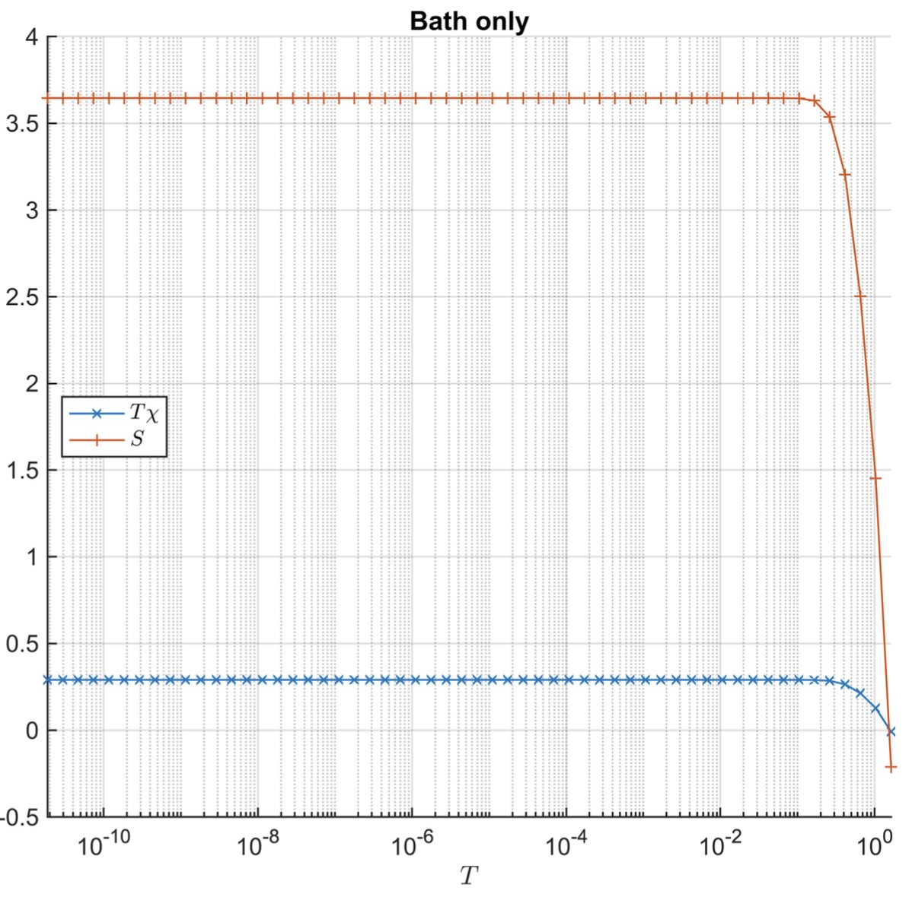
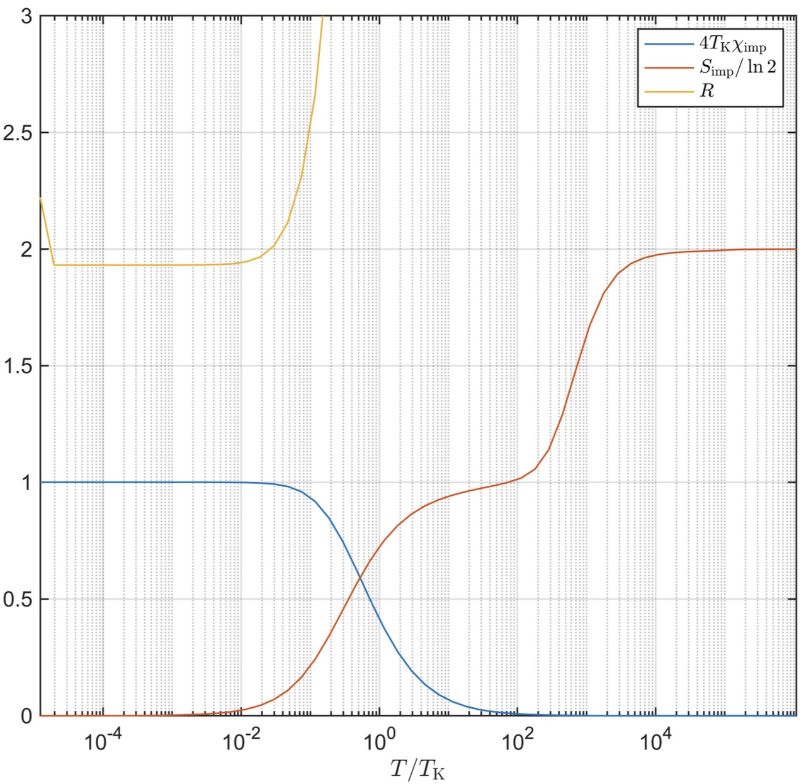
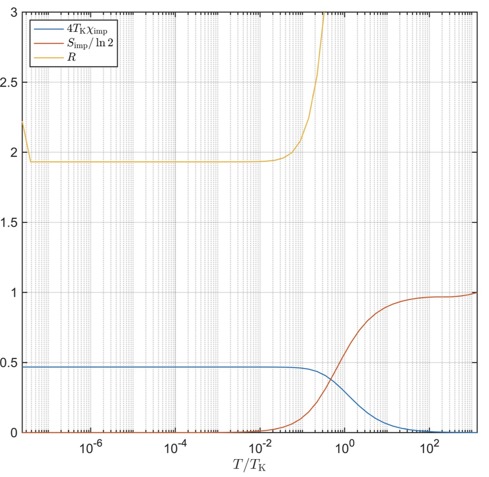

NRG-2: Impurity Contribution to Thermaldynamic Properties
Author: Seung-Sup Lee
Date: 21.06.2020 (Minor update: 30.06.2020)
In this tutorial, we will compute the impurity contribution to the thermodynamic properties of quantum impurity models. The impurity contribution to a thermodynamic property means the difference between the value of the thermodynamic property of the whole quantum impurity system (which has both the impurity and the bath) and that of the bath only. For example, the impurity contribution to the entropy is given by \(S_{{\mathrm{i}\mathrm{m}\mathrm{p}}} =S_{{\mathrm{t}\mathrm{o}\mathrm{t}}} -S_{{\mathrm{b}\mathrm{a}\mathrm{t}\mathrm{h}}}\) . The subscript "tot" means the total system that contain both the impurity and the bath, and the subscript "bath" means the bath only.
The impurity contributions to spin susceptibility \(\chi_{{\mathrm{i}\mathrm{m}\mathrm{p}}}\) , to entropy \(S_{{\mathrm{i}\mathrm{m}\mathrm{p}}}\) , and to specific heat \(C_{{\mathrm{i}\mathrm{m}\mathrm{p}}}\) have strong temperature dependence, which shows the nature of fixed point regimes (free orbital, local moment, and strong coupling) and the crossover between these regimes.
From the spin susceptibility and the specific heat, one can derive the Sommerfeld–Wilson ratio
which is the universal value. Figure 6 in [P. Coleman, arXiv:cond-mat/0612006] shows that the Sommerfeld–Wilson ratio for many correlated systems are quite much the same. For non-interacting systems, the ratio is 1. In the Kondo regime of the single-impurity Anderson model (SIAM) or the single-impurity Kondo model (SIKM), the ratio is 2.
In this tutorial, we will use the conventional NRG scheme in which only the shell of energy eigenstates within each iteration is considered. The energy spectrum at iteration \(\ell\) is regarded as the effective energy spectrum of the system at temperature \(T_{\ell } \equiv {\tilde{E} }_{\ell } /\beta_0\) , where \({\tilde{E} }_{\ell } \propto\Lambda^{-\ell /2}\) is the energy scale at the iteration \(\ell\) (which is an element of the output Inrg.EScale from the iterative diagonalization routine NRG_IterDiagQS) and \(\beta_0\) is a temperature prefactor parameter of order of \(O(1)\) . The effective Hamiltonian at the iteration \(\ell\) is given by
where \(|\alpha \rangle_{\ell }\) are energy eigenstates (including both kept and discarded states) at the iteration \(\ell\) and \(E_{\alpha }^{\ell }\) are the corresponding energy eigenvalue. Then the effective density matrix for the iteration \(\ell\) can be constructed as
where \(Z_{\ell } =\sum_{\alpha } \exp \left(-E_{\alpha }^{\ell } /T_{\ell } \right)\) is the partition function. The spin susceptibility is given by the variance of the spin- \(z\) operator divided by temperature,
where \({\hat{S} }_{<\ell ,z} =\sum_{m\le \ell } {\hat{S} }_{mz}\) is the sum of spin-z operators acting on all the chain sites left from the site \(\ell\) (including the site \(\ell\) also). And the entropy is given by
For details, refer to Sec. III.A.1 of [R. Bulla et al., Rev. Mod. Phys. 80, 395 (2008) or its arXiv version].
The function getTDconvQS.m is designed to compute the spin susceptibility (multiplied with temperature) \(T_{\ell } \chi (T_{\ell } )\) and the entropy \(S(T_{\ell } )\) at every iteration \(\ell\) corresponding to temperature \(T_{\ell }\) .
Single-impurity Anderson model (SIAM)
As a demonstartion of getTDconv.m, we compute the spin susceptibility \(\chi_{{\mathrm{t}\mathrm{o}\mathrm{t}}}\) and the entropy \(S_{{\mathrm{t}\mathrm{o}\mathrm{t}}}\) for the whole SIAM. Here we choose the same parameters as in the last tutorial T10.
clear
% Hamiltonian parameters
U = 4e-3; % Coulomb interaction at the impurity
epsd = -U/2; % impurity on-site energy
Gamma = 8e-5*pi; % hybridization strength
% NRG parameters
Lambda = 2.5; % discretization parameter
N = 55; % length of the Wilson chain
Nkeep = 300;
For this tutorial, we perform a post-processing of the Wilson chain parameters after they are generated by the doCLD function. This post-processing is needed to reduce numerical noise, since the calculation of the impurity contributions to thermodynamic properties is sensitive to the noise. The reason for this sensitivity will be explained later at the end of this document.
The doCLD function uses numerical integration for determining the positions and the coupling strengths of discretized levels in a star geometry. So these values of the discretized levels are susceptible to numerical error whose size is proportional to the values themselves. The position and the coupling strength of the level from the outmost discretization interval is much larger, by many orders of maginutes, than those from the nearest discretization interval to the Fermi level (which are finite, due to the finite number of discretization intervals in numerical implementation). Thus relatively small numerical error for the outmost interval can have significant size for the low-energy intervals.
The Lanczos tridiagonalization which follows the numerical integration is also susceptible to numerical noise. Especially, the noise is accumulated via successive orthogonalization. As a result, the Wilson chain parameters for later sites have small but finite error.
To overcome the inevitable numerical error, we extrapolate the hopping amplitudes for later sites from the values for earlier sites, based on the scaling behavior \(t_{\ell } \propto\Lambda^{-\ell /2}\) for large enough \(\ell\) . Also, we set the on-site energyes as strict zero, which is always true for the particle-hole symmetric bath such that \(\Delta (\omega )=\Delta (-\omega )\) .
% Wilson chain
[ff,~] = doCLD([-1 1],[1 1]*Gamma/pi,Lambda,30);
ff = [ff;ff(end).*(Lambda.^(-(1:(N-numel(ff))).'/2))];
gg = zeros(size(ff));
The rest is the same for the iterative diagonalization.
% symmetries
symstr = 'Acharge,SU2spin'; % U(1) charge and SU(2) spin
% symstr = 'Acharge,Aspin'; % U(1) charge and U(1) spin
% Construct local operators
[F,Z,S,I] = getLocalSpace('FermionS',symstr,'NC',1);
[F,Z,S,EF] = setItag('s00','op',F,Z,S,I.E);
% particle number operator
NF = QSpace;
for itF = 1:numel(F)
NF(itF) = contract(F(itF),'!2*',F(itF));
end
% Impurity Hamiltonian
H0 = U/2*sum(NF)*(sum(NF)-1) + epsd*sum(NF) + 1e-33*EF;
% ket tensor for the impurity
A0 = getIdentity(setItag('L00',getvac(EF,1)),1,EF,1,'K00',[1,3,2]);
H0 = contract(A0,'!2*',{A0,H0});
% same hopping amplitude and on-site energies for all flavors
ff = repmat(ff,[1,numel(F)]);
gg = repmat(gg,[1,numel(F)]);
% iterative diagonalization
Inrg = NRG_IterDiagQS(H0,A0,Lambda,ff,F,gg,NF,Z,Nkeep);
21-05-10 17:11:26 | NRG: start
21-05-10 17:11:26 | #00/55 : NK=3/3, EK=1e-33/1e-33
21-05-10 17:11:26 | #01/55 : NK=10/10, EK=0.04891/0.04891
21-05-10 17:11:26 | #02/55 : NK=35/35, EK=3.207/3.207
21-05-10 17:11:26 | #03/55 : NK=126/126, EK=6.221/6.221
21-05-10 17:11:26 | #04/55 : NK=310/462, EK=7.494/13.01
21-05-10 17:11:26 | #05/55 : NK=310/1154, EK=7.028/13.07
21-05-10 17:11:26 | #06/55 : NK=318/1150, EK=7.238/13.61
21-05-10 17:11:27 | #07/55 : NK=310/1178, EK=7.043/13.08
21-05-10 17:11:27 | #08/55 : NK=318/1150, EK=7.244/13.61
21-05-10 17:11:27 | #09/55 : NK=310/1178, EK=7.068/13.12
21-05-10 17:11:27 | #10/55 : NK=318/1150, EK=7.27/13.59
21-05-10 17:11:27 | #11/55 : NK=310/1178, EK=7.112/13.18
21-05-10 17:11:27 | #12/55 : NK=318/1150, EK=7.354/13.58
21-05-10 17:11:27 | #13/55 : NK=310/1178, EK=7.202/13.32
21-05-10 17:11:27 | #14/55 : NK=322/1150, EK=7.684/13.89
21-05-10 17:11:27 | #15/55 : NK=312/1192, EK=7.455/13.81
21-05-10 17:11:28 | #16/55 : NK=327/1166, EK=8.38/14.69
21-05-10 17:11:28 | #17/55 : NK=304/1218, EK=8.445/14.97
21-05-10 17:11:28 | #18/55 : NK=307/1136, EK=9.021/16.03
21-05-10 17:11:28 | #19/55 : NK=312/1148, EK=9.324/16.01
21-05-10 17:11:28 | #20/55 : NK=311/1170, EK=9.713/17.49
21-05-10 17:11:28 | #21/55 : NK=327/1174, EK=9.798/17.17
21-05-10 17:11:28 | #22/55 : NK=311/1231, EK=9.775/18.24
21-05-10 17:11:28 | #23/55 : NK=302/1174, EK=9.745/17.31
21-05-10 17:11:28 | #24/55 : NK=311/1134, EK=9.83/17.87
21-05-10 17:11:28 | #25/55 : NK=322/1174, EK=9.973/17.45
21-05-10 17:11:29 | #26/55 : NK=311/1210, EK=9.91/18.34
21-05-10 17:11:29 | #27/55 : NK=322/1174, EK=10.12/17.63
21-05-10 17:11:29 | #28/55 : NK=325/1210, EK=10.17/18.31
21-05-10 17:11:29 | #29/55 : NK=322/1224, EK=10.33/18.22
21-05-10 17:11:29 | #30/55 : NK=315/1210, EK=10.19/18.34
21-05-10 17:11:29 | #31/55 : NK=322/1184, EK=10.64/18.35
21-05-10 17:11:29 | #32/55 : NK=303/1210, EK=10.33/18.75
21-05-10 17:11:29 | #33/55 : NK=300/1136, EK=10.78/18.8
21-05-10 17:11:29 | #34/55 : NK=318/1122, EK=10.93/18.83
21-05-10 17:11:29 | #35/55 : NK=300/1190, EK=11.32/19.87
21-05-10 17:11:30 | #36/55 : NK=301/1119, EK=11.16/19.38
21-05-10 17:11:30 | #37/55 : NK=316/1118, EK=11.93/20.39
21-05-10 17:11:30 | #38/55 : NK=306/1175, EK=11.6/20.39
21-05-10 17:11:30 | #39/55 : NK=310/1136, EK=12.08/21.48
21-05-10 17:11:30 | #40/55 : NK=306/1151, EK=11.75/20.69
21-05-10 17:11:30 | #41/55 : NK=307/1136, EK=11.97/21.77
21-05-10 17:11:30 | #42/55 : NK=306/1139, EK=11.82/20.13
21-05-10 17:11:30 | #43/55 : NK=309/1136, EK=12.19/21.89
21-05-10 17:11:31 | #44/55 : NK=306/1147, EK=11.84/20.87
21-05-10 17:11:31 | #45/55 : NK=309/1136, EK=12.21/21.94
21-05-10 17:11:31 | #46/55 : NK=306/1147, EK=11.85/20.89
21-05-10 17:11:31 | #47/55 : NK=309/1136, EK=12.21/21.96
21-05-10 17:11:31 | #48/55 : NK=306/1147, EK=11.86/20.89
21-05-10 17:11:31 | #49/55 : NK=309/1136, EK=12.21/21.97
21-05-10 17:11:31 | #50/55 : NK=306/1147, EK=11.86/20.9
21-05-10 17:11:31 | #51/55 : NK=309/1136, EK=12.21/21.97
21-05-10 17:11:31 | #52/55 : NK=306/1147, EK=11.86/20.9
21-05-10 17:11:32 | #53/55 : NK=309/1136, EK=12.21/21.97
21-05-10 17:11:32 | #54/55 : NK=306/1147, EK=11.86/20.9
21-05-10 17:11:32 | #55/55 : NK=0/1136, EK=0/21.97
21-05-10 17:11:32 | Memory usage : 3.41GiB
Elapsed time: 5.765s, CPU time: 13.74s, Avg # of cores: 2.383
Now we compute the thermodynamic quantities for the whole impurity model (impurity + bath). We use the temperature prefactor parameter \(\beta_0 =1\) .
beta0 = 1; % parameter to define temperature values
[T,Tchi,Sent] = getTDconvQS(Inrg,beta0);
% temperature T, T * spin susceptibility chi, entropy S
figure;
hold on;
plot(T,Tchi,'LineStyle','-','Marker','x','LineWidth',1);
plot(T,Sent,'LineStyle','-','Marker','+','LineWidth',1);
hold off;
set(gca,'XScale','log','LineWidth',1,'FontSize',13);
legend({' $T \chi$ ', ' $S$ '}, ...
'Interpreter','latex','Location','northwest');
xlabel(' $T$ ','Interpreter','latex');
title('Impurity + bath');
xlim([min(T) max(T)]);
grid on;

Thermodynamic properties of the bath only
Then we compute the same properties when there is no impurity in the system. The simplest way is to apply large on-site potential to the impurity which effectively empties out the impurity. By using the same functions except for the large on-site potential, the results are given on the same temperature grid.
% "without" impurity
H0_2 = 1e4*sum(NF);
H0_2 = contract(A0,'!2*',{A0,H0_2}) + 1e-33*contract(A0,'!2*',A0);
% take the impurity level epsd to be far above the band edge (epsd >> 1);
% effectively emptied out
Inrg2 = NRG_IterDiagQS(H0_2,A0,Lambda,ff,F,gg,NF,Z,Nkeep);
21-05-10 17:11:33 | NRG: start
21-05-10 17:11:33 | #00/55 : NK=3/3, EK=2e+04/2e+04
21-05-10 17:11:33 | #01/55 : NK=10/10, EK=1.932e+04/1.932e+04
21-05-10 17:11:33 | #02/55 : NK=35/35, EK=3.055e+04/3.055e+04
21-05-10 17:11:33 | #03/55 : NK=126/126, EK=4.83e+04/4.83e+04
21-05-10 17:11:33 | #04/55 : NK=326/462, EK=3.819e+04/7.637e+04
21-05-10 17:11:33 | #05/55 : NK=310/1216, EK=12.48/6.038e+04
21-05-10 17:11:33 | #06/55 : NK=309/1154, EK=12.22/23.03
21-05-10 17:11:34 | #07/55 : NK=306/1147, EK=11.86/20.9
21-05-10 17:11:34 | #08/55 : NK=309/1136, EK=12.21/21.97
21-05-10 17:11:34 | #09/55 : NK=306/1147, EK=11.86/20.9
21-05-10 17:11:34 | #10/55 : NK=309/1136, EK=12.21/21.97
21-05-10 17:11:34 | #11/55 : NK=306/1147, EK=11.86/20.9
21-05-10 17:11:34 | #12/55 : NK=309/1136, EK=12.21/21.97
21-05-10 17:11:34 | #13/55 : NK=306/1147, EK=11.86/20.9
21-05-10 17:11:34 | #14/55 : NK=309/1136, EK=12.21/21.97
21-05-10 17:11:34 | #15/55 : NK=306/1147, EK=11.86/20.9
21-05-10 17:11:35 | #16/55 : NK=309/1136, EK=12.21/21.97
21-05-10 17:11:35 | #17/55 : NK=306/1147, EK=11.86/20.9
21-05-10 17:11:35 | #18/55 : NK=309/1136, EK=12.21/21.97
21-05-10 17:11:35 | #19/55 : NK=306/1147, EK=11.86/20.9
21-05-10 17:11:35 | #20/55 : NK=309/1136, EK=12.21/21.97
21-05-10 17:11:35 | #21/55 : NK=306/1147, EK=11.86/20.9
21-05-10 17:11:35 | #22/55 : NK=309/1136, EK=12.21/21.97
21-05-10 17:11:35 | #23/55 : NK=306/1147, EK=11.86/20.9
21-05-10 17:11:35 | #24/55 : NK=309/1136, EK=12.21/21.97
21-05-10 17:11:36 | #25/55 : NK=306/1147, EK=11.86/20.9
21-05-10 17:11:36 | #26/55 : NK=309/1136, EK=12.21/21.97
21-05-10 17:11:36 | #27/55 : NK=306/1147, EK=11.86/20.9
21-05-10 17:11:36 | #28/55 : NK=309/1136, EK=12.21/21.97
21-05-10 17:11:36 | #29/55 : NK=306/1147, EK=11.86/20.9
21-05-10 17:11:36 | #30/55 : NK=309/1136, EK=12.21/21.97
21-05-10 17:11:36 | #31/55 : NK=306/1147, EK=11.86/20.9
21-05-10 17:11:36 | #32/55 : NK=309/1136, EK=12.21/21.97
21-05-10 17:11:36 | #33/55 : NK=306/1147, EK=11.86/20.9
21-05-10 17:11:36 | #34/55 : NK=309/1136, EK=12.21/21.97
21-05-10 17:11:37 | #35/55 : NK=306/1147, EK=11.86/20.9
21-05-10 17:11:37 | #36/55 : NK=309/1136, EK=12.21/21.97
21-05-10 17:11:37 | #37/55 : NK=306/1147, EK=11.86/20.9
21-05-10 17:11:37 | #38/55 : NK=309/1136, EK=12.21/21.97
21-05-10 17:11:37 | #39/55 : NK=306/1147, EK=11.86/20.9
21-05-10 17:11:37 | #40/55 : NK=309/1136, EK=12.21/21.97
21-05-10 17:11:37 | #41/55 : NK=306/1147, EK=11.86/20.9
21-05-10 17:11:37 | #42/55 : NK=309/1136, EK=12.21/21.97
21-05-10 17:11:37 | #43/55 : NK=306/1147, EK=11.86/20.9
21-05-10 17:11:38 | #44/55 : NK=309/1136, EK=12.21/21.97
21-05-10 17:11:38 | #45/55 : NK=306/1147, EK=11.86/20.9
21-05-10 17:11:38 | #46/55 : NK=309/1136, EK=12.21/21.97
21-05-10 17:11:38 | #47/55 : NK=306/1147, EK=11.86/20.9
21-05-10 17:11:38 | #48/55 : NK=309/1136, EK=12.21/21.97
21-05-10 17:11:38 | #49/55 : NK=306/1147, EK=11.86/20.9
21-05-10 17:11:38 | #50/55 : NK=309/1136, EK=12.21/21.97
21-05-10 17:11:38 | #51/55 : NK=306/1147, EK=11.86/20.9
21-05-10 17:11:38 | #52/55 : NK=309/1136, EK=12.21/21.97
21-05-10 17:11:38 | #53/55 : NK=306/1147, EK=11.86/20.9
21-05-10 17:11:39 | #54/55 : NK=309/1136, EK=12.21/21.97
21-05-10 17:11:39 | #55/55 : NK=0/1147, EK=0/20.9
21-05-10 17:11:39 | Memory usage : 3.45GiB
Elapsed time: 5.599s, CPU time: 13.21s, Avg # of cores: 2.359
Plot the obtained data. The values show simpler temperature dependence than those of the whole impurity system.
figure;
hold on;
plot(T,Tchi2,'LineStyle','-','Marker','x','LineWidth',1);
plot(T,Sent2,'LineStyle','-','Marker','+','LineWidth',1);
hold off;
set(gca,'XScale','log','LineWidth',1,'FontSize',13);
legend({' $T \chi$ ', ' $S$ '}, ...
'Interpreter','latex','Location','west');
xlabel(' $T$ ','Interpreter','latex');
title('Bath only');
xlim([min(T) max(T)]);
grid on;

Impurity contribution
Subtract the values for the bath only from those for the whole impurity model, to obtain the impurity contribution.
% impurity contribution to the spin susceptibility * temperature
Tchi_imp = Tchi - Tchi2;
% impurity contribution to the entropy
Sent_imp = Sent - Sent2;
The specific heat can be obtained by differentiating the entropy,
$$ C=T\frac{{\mathrm{d}}S}{{\mathrm{d}}T}=\frac{{\mathrm{d}}S}{{\mathrm{d}}(\ln T)}. $$
logT = log(T);
% impurity contribution to the specific heat C = T* dS/dT = dS / d(log T)
% numerical differentiation
C_imp = interp1((logT(1:end-1)+logT(2:end))/2, ...
diff(Sent_imp)./diff(logT),logT,'linear','extrap');
Then we obtain the Sommerfeld–Wilson ratio.
The characteritic temperature scale of the Kondo regime is, literally, the Kondo temperature \(T_{{\mathrm{K}}}\) . The Kondo temperature is the energy scale at which the crossover to the Kondo regime happens. Since the crossover is a smooth change, there are different ways to define the Kondo temperature, which give similar but different values. In this analysis, we use the formula given by the Bethe ansatz solution:
% Kondo temperature from the Bethe ansatz
TK = sqrt(U*Gamma/2)*exp(-pi*U/8/Gamma + pi*Gamma/2/U);
disp(TK);
Plot the result.
figure;
semilogx(T/TK,(Tchi_imp./T)*(4*TK), ...
T/TK,Sent_imp/log(2), ...
T/TK,WR,'LineWidth',1);
set(gca,'LineWidth',1,'FontSize',13,'XTick',10.^(-4:2:4));
xlabel(' $T / T_\mathrm{K}$ ','Interpreter','latex');
legend({' $4 T_\mathrm{K} \chi_\mathrm{imp}$ '; ...
' $S_\mathrm{imp} / \ln 2$ '; ...
' $R$ '}, ...
'Interpreter','latex','Location','northeast');
ylim([0 3]);
xlim([min(T) max(T)]/TK);
grid on;

At \(T\ll T_{{\mathrm{K}}}\) , the Sommerfeld–Wilson ratio \(R\) becomes 2, up to 3% error. The impurity contribution to the entropy \(S_{{\mathrm{i}\mathrm{m}\mathrm{p}}}\) is \(\ln 4\) at high temperature \(T\gg U\) , then decreases to \(\ln 2\) , and then finally vanishes at temperatures \(T\ll T_{{\mathrm{K}}}\) . These values indeed represent the nature of different fixed-point regimes:
- Free orbital regime: At \(T\gg U\) , all four states of the impurity can be populated, so the presence of the impurity adds up \(\ln 4\) to the entropy.
- Local moment regime: At \(T_{{\mathrm{K}}} \ll T\ll U\) , only the singly occupied states of the impurity can be populated. So the impurity contribution is \(\ln 2\) , for two impurity states of \(S_{d,z} =\pm 1/2\) .
- Strong coupling regime: At \(T\ll T_{{\mathrm{K}}}\) , the impurity spin and the bath form the Kondo singlet. The impurity state is locked into the bath state; the impurity and the bath are quantum entangled. Thus there is no additional entropy by the presence of the impurity.
There are a few technical remarks.
- The values of \(T\chi\) and \(S\) , for the whole impurity system and for the bath only, depend on the choice of \(\beta_0\) . However, their subtractions \(T\chi_{{\mathrm{i}\mathrm{m}\mathrm{p}}}\) and \(S_{{\mathrm{i}\mathrm{m}\mathrm{p}}}\) do not change much with changing \(\beta_0\) . (Quick exercise: try out different values of \(\beta_0\) .)
- There is a kink in the curve of the Sommerfeld–Wilson ratio at the lowest temperatures ( \(T\sim 10^{-5} T_{{\mathrm{K}}}\) ). This is a numerical noise. The Sommerfeld–Wilson ratio at such temperatures is given by the ratio between two small values, and each small value is given by the subtraction of two large values (one for the whole impurity and the other for the bath only). For example, Tchi(end) and Tchi2(end) are \(O(0.1)\) , but their difference, Tchi_imp(end) is just \(O(10^{-6} )\) . That's why we have performed the post-processing of the Wilson chain paramers above.
Exercise: Single-impurity Kondo model
Compute the theremodynamic properties for the single-impurity Kondo model, for the value of \(J=8\Gamma D/\pi U\) , considering the same values of \(\Gamma\) and \(U\) used in the above demonstration. Compare your result with Fig. 5 in [R. Bulla et al., Rev. Mod. Phys. 80, 395 (2008)]. Also compare with the SIAM result of \(4T_{{\mathrm{K}}} \chi_{{\mathrm{i}\mathrm{m}\mathrm{p}}}\) , \(S_{{\mathrm{i}\mathrm{m}\mathrm{p}}} /\ln 2\) , and \(R\) , shown in the above demonstration.
Solution to exercise: Single-impurity Kondo model
Perform the iterative diagonalization for the whole Kondo model (SIKM). For details of the iterative diagonalization for the SIKM, refer to the solution to T10b.
clear
% Hamiltonian parameters
U = 4e-3; % Coulomb interaction at the impurity
epsd = -U/2; % impurity on-site energy
Gamma = 8e-5*pi; % hybridization strength
J = 8*Gamma/pi/U; % Kondo coupling strength
% NRG parameters
Lambda = 2.5; % discretization parameter
N = 55; % length of the Wilson chain
Nkeep = 300;
% Wilson chain
[ff,~] = doCLD([-1 1],[1 1]*Gamma/pi,Lambda,30);
% post-processing
ff = [ff;ff(end).*(Lambda.^(-(1:(N-numel(ff))).'/2))];
gg = zeros(size(ff));
ff = ff(2:end); % shift to the left by one site
gg = gg(2:end);
% Construct local operators
[F,Z,S,I] = getLocalSpace('FermionS','Acharge,SU2spin','NC',1);
[F,Z,S,EF] = setItag('s00','op',F,Z,S,I.E);
[Ss,Is] = getLocalSpace('Spin',1/2);
[Ss,Is] = setItag('L00','op',Ss,Is.E);
% attach U(1) charge symmetry label to spin
Ss = appendScalarSymmetry(Ss,'A','pos',1);
Is = appendScalarSymmetry(Is,'A','pos',1);
% particle number operator
NF = QSpace;
for itF = 1:numel(F)
NF(itF) = contract(F(itF),'!2*',F(itF));
end
% Impurity Hamiltonian
H0 = 2*J*contract(Ss,S,'*');
% ket tensor for the impurity
A0 = getIdentity(Is,1,EF,1,'K00',[1,3,2]);
H0 = contract(A0,'!2*',{A0,H0}) + 1e-33*contract(A0,'!2*',A0);
% iterative diagonalization
Inrg = NRG_IterDiagQS(H0,A0,Lambda,ff,F,gg,NF,Z,Nkeep);
21-05-10 17:44:16 | NRG: start
21-05-10 17:44:16 | #00/54 : NK=4/4, EK=0.08/0.08
21-05-10 17:44:16 | #01/54 : NK=15/15, EK=3.231/3.231
21-05-10 17:44:16 | #02/54 : NK=56/56, EK=6.468/6.468
21-05-10 17:44:16 | #03/54 : NK=210/210, EK=13.1/13.1
21-05-10 17:44:16 | #04/54 : NK=310/792, EK=9.834/22.35
21-05-10 17:44:16 | #05/54 : NK=311/1170, EK=9.829/18.02
21-05-10 17:44:16 | #06/54 : NK=302/1174, EK=9.77/17.36
21-05-10 17:44:16 | #07/54 : NK=311/1134, EK=9.852/17.96
21-05-10 17:44:16 | #08/54 : NK=322/1174, EK=9.953/17.44
21-05-10 17:44:17 | #09/54 : NK=311/1210, EK=9.893/18.39
21-05-10 17:44:17 | #10/54 : NK=322/1174, EK=10.07/17.57
21-05-10 17:44:17 | #11/54 : NK=311/1210, EK=9.947/18.33
21-05-10 17:44:17 | #12/54 : NK=322/1172, EK=10.25/17.87
21-05-10 17:44:17 | #13/54 : NK=315/1210, EK=10.09/18.32
21-05-10 17:44:17 | #14/54 : NK=312/1184, EK=10.36/18.18
21-05-10 17:44:17 | #15/54 : NK=300/1170, EK=10.15/18.49
21-05-10 17:44:17 | #16/54 : NK=309/1124, EK=10.74/18.46
21-05-10 17:44:17 | #17/54 : NK=325/1158, EK=10.85/18.96
21-05-10 17:44:18 | #18/54 : NK=322/1218, EK=11.36/19.57
21-05-10 17:44:18 | #19/54 : NK=320/1204, EK=11.26/19.6
21-05-10 17:44:18 | #20/54 : NK=311/1192, EK=11.7/20.71
21-05-10 17:44:18 | #21/54 : NK=306/1160, EK=11.51/20.05
21-05-10 17:44:18 | #22/54 : NK=310/1136, EK=12.01/21.29
21-05-10 17:44:18 | #23/54 : NK=306/1151, EK=11.71/20.59
21-05-10 17:44:18 | #24/54 : NK=307/1136, EK=11.96/21.69
21-05-10 17:44:18 | #25/54 : NK=306/1139, EK=11.8/20.11
21-05-10 17:44:18 | #26/54 : NK=307/1136, EK=11.97/21.86
21-05-10 17:44:18 | #27/54 : NK=306/1139, EK=11.83/20.16
21-05-10 17:44:19 | #28/54 : NK=309/1136, EK=12.2/21.93
21-05-10 17:44:19 | #29/54 : NK=306/1147, EK=11.85/20.88
21-05-10 17:44:19 | #30/54 : NK=309/1136, EK=12.21/21.95
21-05-10 17:44:19 | #31/54 : NK=306/1147, EK=11.85/20.89
21-05-10 17:44:19 | #32/54 : NK=309/1136, EK=12.21/21.96
21-05-10 17:44:19 | #33/54 : NK=306/1147, EK=11.86/20.89
21-05-10 17:44:19 | #34/54 : NK=309/1136, EK=12.21/21.97
21-05-10 17:44:19 | #35/54 : NK=306/1147, EK=11.86/20.9
21-05-10 17:44:19 | #36/54 : NK=309/1136, EK=12.21/21.97
21-05-10 17:44:19 | #37/54 : NK=306/1147, EK=11.86/20.9
21-05-10 17:44:20 | #38/54 : NK=309/1136, EK=12.21/21.97
21-05-10 17:44:20 | #39/54 : NK=306/1147, EK=11.86/20.9
21-05-10 17:44:20 | #40/54 : NK=309/1136, EK=12.21/21.97
21-05-10 17:44:20 | #41/54 : NK=306/1147, EK=11.86/20.9
21-05-10 17:44:20 | #42/54 : NK=309/1136, EK=12.21/21.97
21-05-10 17:44:20 | #43/54 : NK=306/1147, EK=11.86/20.9
21-05-10 17:44:20 | #44/54 : NK=309/1136, EK=12.21/21.97
21-05-10 17:44:20 | #45/54 : NK=306/1147, EK=11.86/20.9
21-05-10 17:44:20 | #46/54 : NK=309/1136, EK=12.21/21.97
21-05-10 17:44:20 | #47/54 : NK=306/1147, EK=11.86/20.9
21-05-10 17:44:21 | #48/54 : NK=309/1136, EK=12.21/21.97
21-05-10 17:44:21 | #49/54 : NK=306/1147, EK=11.86/20.9
21-05-10 17:44:21 | #50/54 : NK=309/1136, EK=12.21/21.97
21-05-10 17:44:21 | #51/54 : NK=306/1147, EK=11.86/20.9
21-05-10 17:44:21 | #52/54 : NK=309/1136, EK=12.21/21.97
21-05-10 17:44:21 | #53/54 : NK=306/1147, EK=11.86/20.9
21-05-10 17:44:21 | #54/54 : NK=0/1136, EK=0/21.97
21-05-10 17:44:21 | Memory usage : 3.38GiB
Elapsed time: 5.517s, CPU time: 12.89s, Avg # of cores: 2.336
Perform the iterative diagonalization for the bath only. We replace the Kondo impurity with vacuum.
A0_2 = getIdentity(setItag(getvac(EF,1),'L00'),2,EF,2,'K00',[1 3 2]);
H0_2 = 1e-33*contract(A0_2,'!2*',A0_2);
Inrg2 = NRG_IterDiagQS(H0_2,A0_2,Lambda,ff,F,gg,NF,Z,Nkeep);
21-05-10 17:44:22 | NRG: start
21-05-10 17:44:22 | #00/54 : NK=3/3, EK=1e-33/1e-33
21-05-10 17:44:22 | #01/54 : NK=10/10, EK=3.203/3.203
21-05-10 17:44:22 | #02/54 : NK=35/35, EK=6.15/6.15
21-05-10 17:44:22 | #03/54 : NK=126/126, EK=13/13
21-05-10 17:44:22 | #04/54 : NK=310/462, EK=12.48/21.9
21-05-10 17:44:22 | #05/54 : NK=309/1154, EK=12.22/23.03
21-05-10 17:44:22 | #06/54 : NK=306/1147, EK=11.86/20.9
21-05-10 17:44:22 | #07/54 : NK=309/1136, EK=12.21/21.97
21-05-10 17:44:22 | #08/54 : NK=306/1147, EK=11.86/20.9
21-05-10 17:44:22 | #09/54 : NK=309/1136, EK=12.21/21.97
21-05-10 17:44:22 | #10/54 : NK=306/1147, EK=11.86/20.9
21-05-10 17:44:22 | #11/54 : NK=309/1136, EK=12.21/21.97
21-05-10 17:44:23 | #12/54 : NK=306/1147, EK=11.86/20.9
21-05-10 17:44:23 | #13/54 : NK=309/1136, EK=12.21/21.97
21-05-10 17:44:23 | #14/54 : NK=306/1147, EK=11.86/20.9
21-05-10 17:44:23 | #15/54 : NK=309/1136, EK=12.21/21.97
21-05-10 17:44:23 | #16/54 : NK=306/1147, EK=11.86/20.9
21-05-10 17:44:23 | #17/54 : NK=309/1136, EK=12.21/21.97
21-05-10 17:44:23 | #18/54 : NK=306/1147, EK=11.86/20.9
21-05-10 17:44:23 | #19/54 : NK=309/1136, EK=12.21/21.97
21-05-10 17:44:23 | #20/54 : NK=306/1147, EK=11.86/20.9
21-05-10 17:44:23 | #21/54 : NK=309/1136, EK=12.21/21.97
21-05-10 17:44:24 | #22/54 : NK=306/1147, EK=11.86/20.9
21-05-10 17:44:24 | #23/54 : NK=309/1136, EK=12.21/21.97
21-05-10 17:44:24 | #24/54 : NK=306/1147, EK=11.86/20.9
21-05-10 17:44:24 | #25/54 : NK=309/1136, EK=12.21/21.97
21-05-10 17:44:24 | #26/54 : NK=306/1147, EK=11.86/20.9
21-05-10 17:44:24 | #27/54 : NK=309/1136, EK=12.21/21.97
21-05-10 17:44:24 | #28/54 : NK=306/1147, EK=11.86/20.9
21-05-10 17:44:24 | #29/54 : NK=309/1136, EK=12.21/21.97
21-05-10 17:44:24 | #30/54 : NK=306/1147, EK=11.86/20.9
21-05-10 17:44:25 | #31/54 : NK=309/1136, EK=12.21/21.97
21-05-10 17:44:25 | #32/54 : NK=306/1147, EK=11.86/20.9
21-05-10 17:44:25 | #33/54 : NK=309/1136, EK=12.21/21.97
21-05-10 17:44:25 | #34/54 : NK=306/1147, EK=11.86/20.9
21-05-10 17:44:25 | #35/54 : NK=309/1136, EK=12.21/21.97
21-05-10 17:44:25 | #36/54 : NK=306/1147, EK=11.86/20.9
21-05-10 17:44:25 | #37/54 : NK=309/1136, EK=12.21/21.97
21-05-10 17:44:25 | #38/54 : NK=306/1147, EK=11.86/20.9
21-05-10 17:44:25 | #39/54 : NK=309/1136, EK=12.21/21.97
21-05-10 17:44:26 | #40/54 : NK=306/1147, EK=11.86/20.9
21-05-10 17:44:26 | #41/54 : NK=309/1136, EK=12.21/21.97
21-05-10 17:44:26 | #42/54 : NK=306/1147, EK=11.86/20.9
21-05-10 17:44:26 | #43/54 : NK=309/1136, EK=12.21/21.97
21-05-10 17:44:26 | #44/54 : NK=306/1147, EK=11.86/20.9
21-05-10 17:44:26 | #45/54 : NK=309/1136, EK=12.21/21.97
21-05-10 17:44:26 | #46/54 : NK=306/1147, EK=11.86/20.9
21-05-10 17:44:26 | #47/54 : NK=309/1136, EK=12.21/21.97
21-05-10 17:44:26 | #48/54 : NK=306/1147, EK=11.86/20.9
21-05-10 17:44:27 | #49/54 : NK=309/1136, EK=12.21/21.97
21-05-10 17:44:27 | #50/54 : NK=306/1147, EK=11.86/20.9
21-05-10 17:44:27 | #51/54 : NK=309/1136, EK=12.21/21.97
21-05-10 17:44:27 | #52/54 : NK=306/1147, EK=11.86/20.9
21-05-10 17:44:27 | #53/54 : NK=309/1136, EK=12.21/21.97
21-05-10 17:44:27 | #54/54 : NK=0/1147, EK=0/20.9
21-05-10 17:44:27 | Memory usage : 3.39GiB
Elapsed time: 5.586s, CPU time: 12.79s, Avg # of cores: 2.29
Then subtract the thermodynamic properties from the bath only from those from the whole impurity model, to obtain the impurity contribution.
% impurity contribution to the spin susceptibility (* temperature)
Tchi_imp = Tchi - Tchi2;
% impurity contribution to the entropy
Sent_imp = Sent - Sent2;
logT = log(T);
% impurity contribution to the specific heat C = T* dS/dT = dS / d(log T)
C_imp = interp1((logT(1:end-1)+logT(2:end))/2, ...
diff(Sent_imp)./diff(logT),logT,'linear','extrap');
% Sommerfeld-Wilson ratio
WR = (Tchi_imp./C_imp)*(4*(pi^2)/3);
To rescale the temperature, we compute the Kondo temperature \(T_{{\mathrm{K}}}\) . Here we use the formula from the second-order poor man's scaling calculation.
Plot the result.
figure;
semilogx(T/TK,(Tchi_imp./T)*(4*TK), ...
T/TK,Sent_imp/log(2), ...
T/TK,WR,'LineWidth',1);
set(gca,'LineWidth',1,'FontSize',13);
xlabel(' $T / T_\mathrm{K}$ ','Interpreter','latex');
legend({' $4 T_\mathrm{K} \chi_\mathrm{imp}$ '; ...
' $S_\mathrm{imp} / \ln 2$ '; ...
' $R$ '}, ...
'Interpreter','latex','Location','northwest');
ylim([0 3]);
xlim([min(T) max(T)]/TK);
grid on;

The curves of \(R(T)\) and \(\chi_{{\mathrm{i}\mathrm{m}\mathrm{p}}} (T)\) for the SIKM exhibit similar behavior as those for the SIAM. Compare this plot with the demonstration plot. The kinks of \(R\) at the highest and the lowest temperatures come from numerical artifact.
On the other hand, the curve of \(S_{{\mathrm{i}\mathrm{m}\mathrm{p}}} (T)\) for the SIKM shows different features from that for the SIAM. \(S_{{\mathrm{i}\mathrm{m}\mathrm{p}}} (T)\) for the SIAM has had three plateaus that represent three regimes: (i) \(\ln 4\) for the free orbital regime, (ii) \(\ln 2\) for the local moment regime, and (iii) \(0\) for the strong coupling regime. \(S_{{\mathrm{i}\mathrm{m}\mathrm{p}}} (T)\) for the SIKM has only two plateaus: (i) \(\ln 2\) for the local moment regime and (ii) \(0\) for the strong coupling regime.
The absence of the free orbital regime is natural. In the derivation of the SIKM out of the SIAM, the doubly-occupied and the empty states of the impurity are "integrated out." As the result, the impurity of the SIKM has only spin degrees of freedom. That is, there is no free orbital regime at all for the SIKM.